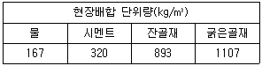
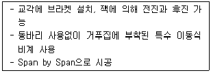
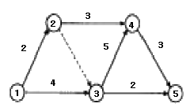
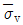
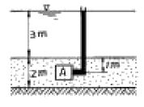
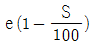
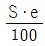
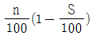
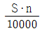

건설재료시험산업기사 (2005-03-20 기출문제)
1과목: 콘크리트공학
1. 다음 중 주로 트레미, 콘크리트 펌프, 밑열림 상자 및 밑열림 포대를 사용하여 시공하는 콘크리트는?
- 수중콘크리트
- 해양콘크리트
- 프리팩트콘크리트
- 섬유보강콘크리트
(정답률: 알수없음)

2. 프리팩트 콘크리트의 특징 중 틀린 것은?
- 투수성이 낮다.
- 블리딩 및 레이탄스가 적다.
- 수축률이 크다.
- 수중 콘크리트에 적합하다.
(정답률: 알수없음)
3. 콘크리트의 동결융해의 반복작용에 대한 내구성을 향상시키기 위한 방법 중 틀린 것은?
- AE제를 사용하여 적정량의 연행공기를 연행시킨다.
- 물-시멘트비를 작게 하여 치밀한 콘크리트를 만든다.
- 동일한 공기량일 경우 기포의 크기가 큰 콘크리트를 만든다.
- 제설제 등이 콘크리트 중에 스며들지 않도록 한다.
(정답률: 알수없음)
4. 콘크리트 구조물의 유지관리를 위한 콘크리트 강도 검사법이 아닌 것은?
- 슈미트 해머법
- 중성화 측정법
- 코아 공시체 강도에 의한 방법
- 초음파 검사법
(정답률: 알수없음)
5. 다음 중 콘크리트의 건조수축에 가장 적은 영향을 미치는 것은?
- 단위수량
- 양생 상태
- 단위시멘트량
- 하중 재하기간
(정답률: 알수없음)
6. 조강포틀랜드 시멘트를 사용한 콘크리트의 양생시 습윤상태의 보호기간은 최소 얼마 이상을 표준으로 하는가? (단, 일평균기온이 15℃ 이상인 경우)
- 1일
- 3일
- 5일
- 7일
(정답률: 알수없음)
7. 시멘트 풀의 응결에 대한 설명 중 틀린 것은?
- 분말도가 크면 응결은 빨라진다.
- 습도가 높을수록 응결은 빨라진다.
- 알민산3석회(C3A)가 많을수록 응결은 빨라진다.
- 물-시멘트비가 높을수록 응결은 빨라진다.
(정답률: 알수없음)
8. 콘크리트의 품질을 개선할 목적으로 사용하는 혼화재료는 혼화재와 혼화제로 분류한다. 분류의 기준은 무엇인가?
- 사용방법
- 사용용도
- 사용재료
- 사용량
(정답률: 80%)
9. 콘크리트의 단위잔골재량과 단위굵은골재량이 각각 700kg/m3과 1,060kg/m3이며, 비중은 잔골재와 굵은골재가 각각 2.61 및 2.65 일 때 잔골재율(S/a)은 얼마인가?
- 35%
- 40%
- 45%
- 50%
(정답률: 65%)
10. 프리스트레싱 작업시 주의해야 할 사항으로 옳지 않은 것은?
- 긴장재는 이것을 구성하는 각각의 PS강재에 소정의 인장력이 고루 주어지도록 인장하여야 한다.
- 긴장재에 인장력을 줄 때에는 고정장치의 활동에 의한 손실을 고려하여야 한다.
- 프리스트레싱 작업중에 발생되는 위험을 예방하기 위해서는 인장장치 뒤에서 작업을 감독하여야 한다.
- 각 PS강재의 처짐에 의한 길이의 차를 없애기 위해서는 고정장치사이에 간격재를 두어 각 강재의 처짐을 가지런히 하던가 고정하기 전에 미리 PS강재를 적당하게 인장해 두어야 한다.
(정답률: 알수없음)
11. 경량골재콘크리트의 배합에 대해 맞지 않는 것은?
- 경량골재콘크리트는 AE콘크리트로 하는 것을 원칙으로 한다.
- 경량골재콘크리트의 공기량은 보통골재를 사용한 콘크리트 보다 2% 작게 해야 한다.
- 슬럼프는 일반적인 경우 대체로 5∼18㎝를 표준으로 한다.
- 콘크리트의 수밀성을 기준으로 물-시멘트비를 정할 경우에는 55% 이하를 표준으로 한다.
(정답률: 알수없음)
12. 굵은골재의 최대치수에 관한 설명 중 맞지 않는 것은?
- 일반적인 철근콘크리트 구조물의 경우 25㎜ 이하이다.
- 단면이 큰 철근콘크리트 구조물의 경우 40㎜ 이하이다.
- 무근콘크리트인 경우 50㎜ 이하이다.
- 부재 최소치수의 1/5, 철근피복 및 철근의 최소순간격의 3/4을 초과해서는 안된다.
(정답률: 55%)
13. 콘크리트의 공기량에 영향을 미치는 일반적인 요인으로 옳지 않은 것은?
- 시멘트의 분말도가 크고 단위 시멘트량이 증가할수록 공기량은 감소한다.
- 콘크리트를 다질 때 진동기를 사용하면 공기량은 감소한다.
- 콘크리트의 온도가 낮을수록 공기량은 감소한다.
- 콘크리트가 응결, 경화되면 공기량은 감소한다.
(정답률: 알수없음)
14. 시방배합결과 물 180 kg/m3, 잔골재 650 kg/m3, 굵은골재 1000 kg/m3을 얻었다. 잔골재의 표면수율이 3%, 굵은골재의 표면수율이 0% 라고 하면 현장배합상의 단위수량은?
- 160.5 kg/m3
- 170.5 kg/m3
- 189.5 kg/m3
- 199.5 kg/m3
(정답률: 알수없음)
15. 다음 중 국내의 경우 콘크리트의 컨시스턴시(Consistency)를 측정하는 가장 일반적이고 간편한 방법은?
- 슬럼프 시험
- 일리발렌 시험
- 다짐계수 시험
- 프록타관입시험
(정답률: 알수없음)
16. 다음과 같은 현장배합표를 보고 가로 1m, 세로 2m, 높이 5m 구조물의 거푸집을 채우는데 필요한 잔골재량으로 맞는 것은?

- 893 kg
- 2,000 kg
- 8,930 kg
- 20,000 kg
(정답률: 알수없음)
17. 다음 중 한중콘크리트로 시공할 경우 가장 크게 고려해야 하는 사항은?
- 시공의 용이
- 화학적 저항성 증대
- 초기동해의 방지
- 수화열 저감
(정답률: 알수없음)
18. 굳지 않은 콘크리트의 배합이 예정대로 되어 있는지의 여부와 각 재료의 배합상태를 알기 위해 실시하는 시험은 어느 것인가?
- 굳지 않은 콘크리트의 씻기 분석 시험
- 굳지 않은 콘크리트의 공기량 시험
- 굳지 않은 콘크리트의 단위용적중량 시험
- 콘크리트의 블리딩 시험
(정답률: 20%)
19. 시방배합을 현장배합으로 수정할 때 고려 할 사항은?
- 골재의 표면수
- 슬럼프값
- 굵은 골재의 최대치수
- 단위시멘트량
(정답률: 알수없음)
20. 매스콘크리트에서 균열을 제어하기 위한 대책으로 잘못된 것은?
- 균열유발줄눈을 적절히 둔다.
- 치기시간간격을 가능한한 길게 한다.
- 저온의 재료를 사용하여 배합한다.
- 치기구획의 크기를 적절히 정한다.
(정답률: 알수없음)
2과목: 건설재료 및 시험
21. 콘크리트용 혼화제인 방수제의 방수원리에 대한 설명 중 틀린 것은?
- 미세한 물질을 혼입하여 공극을 물리적으로 충전시킨다.
- 가스를 발생시켜 기포를 도입한다.
- 공극에 수밀성을 높이는 막을 형성한다.
- 수화반응을 촉진시켜서 생기는 시멘트 겔에 의해 공극을 충전시킨다.
(정답률: 알수없음)
22. AE 콘크리트의 특성에 대한 설명으로 틀린 것은?
- 콘크리트 경화에 대한 발열량이 많아진다.
- 단위수량을 적게 할 수 있다.
- 시공연도를 좋게 하며 재료의 분리가 적어진다.
- 동결융해에 대한 저항성을 크게 한다.
(정답률: 알수없음)
23. 물-시멘트 비를 증가시키지 않고 slump를 증가시키는 방법으로 잘못된 것은?
- 촉진제 사용
- AE제 사용
- 잔 골재율을 증가
- 감수제 혹은 유동화제 사용
(정답률: 37%)
24. 시멘트 분산제에 관한 다음 설명중에서 잘못된 것은?
- 분산제를 사용한 콘크리트는 워커빌리티가 좋고, 유동성이 커지므로 단위수량을 줄일 수 있다.
- 분산제를 사용하면 시멘트 입자가 물과 접촉하는 면적이 많아져서 내구성과 수밀성이 떨어진다.
- 분산제를 사용하면 콘크리트중의 재료분리나 블리딩이 작아진다.
- 분산제는 콘크리트속의 시멘트입자에 표면활성을 주어 시멘트를 균등하게 분포시키는 역할을 한다.
(정답률: 알수없음)
25. 플라스틱(plastic)제품의 장점이 아닌 것은?
- 비중이 작고 가공 및 성형이 쉽다.
- 대부분 투광성이 커서 이용가치가 높다.
- 내열성, 내후성이 있고, 탄성계수가 크다.
- 유기재료에 비해 내수성, 내구성이 있다.
(정답률: 알수없음)
26. 시멘트가 공기 중의 수분을 흡수하여 시멘트 자체들끼리 일어나는 수화작용을 무엇이라 하는가?
- 경화
- 응결
- 팽창
- 풍화
(정답률: 알수없음)
27. 다음 중 아스팔트의 침입도(경도)시험 조건으로 옳은 것은?
- 온도 25℃에서 200g의 표준침을 5초동안 가하여 관입한 깊이를 나타낸 것
- 온도 25℃에서 100g의 표준침을 5초동안 가하여 관입한 깊이를 나타낸 것
- 온도 25℃에서 100g의 표준침을 10초동안 가하여 관입한 깊이를 나타낸 것
- 온도 30℃에서 100g의 표준침을 5초동안 가하여 관입한 깊이를 나타낸 것
(정답률: 알수없음)
28. 어떤 골재의 단위용적 질량이 1.70t/m3이고 밀도가 2.5g/cm3 일 때 공극률은?
- 30%
- 20%
- 32%
- 53%
(정답률: 알수없음)
29. 다음 중 석유아스팔트의 종류가 아닌 것은?
- 록(Rock)아스팔트
- 블라운(blown)아스팔트
- 용제추출(Propane)아스팔트
- 스트레이트(Straight)아스팔트
(정답률: 알수없음)
30. 건설공사 품질시험기준 중 노체의 함수량시험은 몇 m3마다 시험을 하여야 하는가?
- 2000m3
- 3000m3
- 4000m3
- 5000m3
(정답률: 알수없음)
31. 다음 중 골재의 조립율 계산에 필요로 하지 않는 체는?
- 0.15mm
- 0.3mm
- 25mm
- 80mm
(정답률: 알수없음)
32. 고무혼입 아스팔트를 스트레이트 아스팔트와 비교할 때 다음과 같은 특징이 있는데 다음 중 그 내용이 틀린 것은?
- 감온성이 크다.
- 응집력과 부착력이 크다.
- 탄성 및 충격저항이 크다.
- 마찰계수 및 내노화성이 크다.
(정답률: 알수없음)
33. 콘크리트용 골재의 성질로서 갖추어야 할 사항이 아닌 것은 어느 것인가?
- 마모에 대한 저항성이 커야 한다.
- 모양이 가늘고 길거나, 편평할 것
- 물리적, 화학적으로 안정할 것
- 마찰에 대한 저항이 클 것
(정답률: 70%)
34. 아스팔트 신도시험에서 아스팔트가 인장되는 최소단면 부분의 단면적으로 맞는 것은?
- 1 ㎝2
- 4 ㎝2
- 6.5 ㎝2
- 9 ㎝2
(정답률: 알수없음)
35. 다음 폭약 중 폭파력이 가장 강하고 수중에서도 폭발하는 것은?
- 규조토 다이나마이트
- 스트레이트 다이나마이트
- 분상 다이나마이트
- 교질 다이나마이트
(정답률: 알수없음)
36. 다음 중 대리석에 대한 설명 중 알맞는 것은?
- 아름다운 광택이 있어 주로 실내장식재로 쓰인다.
- 흡수성, 여과성이 커서 다이나마이트 제조에 이용된다.
- 직각방향으로 가공이 어려워 정원석, 비석으로 사용된다.
- 중요공사재료로 부적절하며 바닥에 까는 돌, 돌담으로 사용된다.
(정답률: 80%)
37. 건설공사 품질시험기준중 노상의 프르프롤링은 5톤 이상의 복륜하중으로 통과할때 노상 완성후 전구간에 걸쳐 최소 몇 회를 하여야 하는가?
- 1회
- 2회
- 3회
- 4회
(정답률: 알수없음)
38. 조강 포틀랜드 시멘트에 대한 설명으로 옳은 것은?
- 저온에서도 강도 발현이 좋으므로 한중 콘크리트에 사용하면 좋다.
- 수화열이 높으므로 매스 콘크리트에 좋다.
- 응결시 수화열이 높으므로 장기 강도가 높다.
- 건조수축이 적어 중용열 시멘트와 같은 용도로 쓰인다.
(정답률: 64%)
39. 다음과 같은 강의 화학성분 중에서 취성을 증가시키는 가장 큰 요소는?
- 인(P)
- 탄소(C)
- 규소(Si)
- 망간(Mn)
(정답률: 알수없음)
40. 목재의 조직중에서 강도가 가장 큰 부분은 어느 것인가?
- 수심
- 심재
- 변재
- 수피
(정답률: 알수없음)
3과목: 건설시공학
41. 관거의 안지름 D=10cm, 관거길이 L=80m, 관거낙차 h=1.0m 라 할 때, 관거내의 평균유속을 Giesler 공식에 의하면 유속(m/sec)은 얼마인가?
- 0.5071
- 0.6071
- 0.7071
- 0.8071
(정답률: 46%)
42. 불도저로서 운반거리가 50m이고, 전진속도 V1 = 36m/min, 후진속도 V2 = 42m/min, 대기시간 t = 0.23min 이라 할 때 사이클 타임(Cm)은 얼마인가?
- 2.8min
- 2.7min
- 2.6min
- 2.5min
(정답률: 알수없음)
43. 콘크리트 중력댐을 시공할 때 된비빔 콘크리트를 불도저로 포설, 진동 롤러로 다져서 댐을 축조하는 RCD공법에 대한 설명으로 잘못된 것은?
- 타공법에 비하여 단위시멘트량이 적다.
- 댐의 수평 전체면을 연속적으로 시공 가능하다.
- 다짐장비는 손잡이식 내부진동기 또는 바이브로도저가 사용된다.
- 수화열을 줄이기 위한 쿨링이 필요치 않다.
(정답률: 알수없음)
44. 지하철 개착공법에 있어서 다음 중 관계 없는 것은?
- 연속토류벽 공법
- H강말뚝 공법
- 침투압 공법
- 강널말뚝 공법
(정답률: 알수없음)
45. 샌드 드래인(sand drain)공법에 관한 설명중 옳지 않은 것은?
- 투수계수가 작은 점성토 지반의 개량공법으로 주로 사용된다.
- 일반적으로 샌드 매트를 부설하여 연약층의 압밀을 위한 상부 배수층의 역할을 하도록 한다.
- 샌드 드레인 설치시 주위지반이 교란되기 쉬운 단점을 가지고 있다.
- 모래 말뚝 간격은 점성토의 샌드 매트의 두께에 따라 변한다.
(정답률: 55%)
46. 도로포장 두께를 결정하는 시험 방법이 아닌 것은?
- 평판재하시험
- CBR시험
- 벤켈먼빔시험
- 마아셜시험
(정답률: 20%)
47. 네트워크를 구성하는 작업의 소요일수를 3점 견적법에 의하여 평균을 구하면 며칠이 소요 되는가? (단, 낙관치 a : 15일, 최확치 m : 20일,비관치 b : 31일)
- 20일
- 21일
- 22일
- 31일
(정답률: 알수없음)
48. 특히 함수비가 높은 토질에 사용하고 보통 접지압이 0.25kg/cm2 ~ 0.14kg/cm2 으로 가벼운 불도저는?
- 스트레이트도저
- 레이크도저
- 앵글도저
- 습지도저
(정답률: 알수없음)
49. 최근 들어 사용이 증가되고 있는 고무혼입 아스팔트 포장의 특징으로 거리가 먼 것은?
- 신도(伸度)가 증가된다.
- 감온성이 감소한다.
- 마모에 대한 저항성이 작다.
- 저온시 취성이 개선된다.
(정답률: 알수없음)
50. 다음 NATM(New Austrian Tunneling Method)에 관한 기술 중 옳지 않은 것은?
- 터널 굴착후 바로 뿜어 붙이기 콘크리트의 1차 라이닝을 하여 토압의 변형을 허용하고 2차 라이닝을 하는 공법이다.
- 1차, 2차 복공 사이에 방수층이 시공되므로 지수성이 양호하고 동해방지효과가 크다.
- 용수가 많은 지질에서도 NATM이 가능하다.
- 원지반이 파괴되어 록볼트(Rock bolt)의 구멍 뚫기와 타설이 어려울 때는 NATM이 곤란하다.
(정답률: 50%)
51. 교대뒷쪽에 설치하는 답괴판(approach slab)을 설치하는 목적으로 옳은 것은?
- 부등침하방지
- 기초의 세굴방지
- 배면토사방지
- 교좌장치 보호
(정답률: 37%)
52. 아래의 표는 장대교 시공법의 특징에 대한 설명이다. 다음 중 어느 공법에 대한 설명인가?

- FSM공법
- FCM공법
- MSS공법
- ILM공법
(정답률: 50%)
53. 그림과 같은 단면의 토공을 백호(back hoe)로 할 경우 순 공사비는? (단, back hoe의 시간당 작업량 Q = 50m3/hr, back hoe의 시간당 손료 40,000원/hr)
- 880,000원
- 704,000원
- 44,000,000원
- 35,200,000원
(정답률: 알수없음)
54. 돌쌓기 공법에서 줄눈에 모르터를 사용하고 뒷채움에 콘크리트를 사용하는 방식은?
- 메쌓기
- 찰쌓기
- 정층(整層)쌓기
- 부정층(不整層)쌓기
(정답률: 50%)
55. 공기케이슨 공법(pneumatic cassion method)에서 35m 깊이 정도 이상을 침하시키지 못하는 가장 큰 이유는?
- 침하시키기가 곤란하다.
- 다른 공법보다 비경제적이다.
- cassion이 수압에 견디지 못한다.
- 작업부가 수압에 견디지 못한다.
(정답률: 46%)
56. 다음과 같은 공정표에서 주공정이 옳게 표기된 것은?

- 1-2-4-5
- 1-3-4-5
- 1-3-5
- 1-2-3-5
(정답률: 알수없음)
57. 암반굴착시 제어발파를 실시하는 효과와 거리가 먼 것은?
- 낙석위험이 적다.
- 버력운반량이 많다.
- 암석면이 매끈하다.
- 복공콘크리트양이 절약된다.
(정답률: 알수없음)
58. 보통 흙을 재료로 하여 1,800 m3의 흙쌓기를 축조할 경우 굴착해야할 토량은 얼마인가? (단, 토량의 변화율은 C = 0.90임 )
- 1,900 m3
- 2,000 m3
- 1,800 m3
- 2,100 m3
(정답률: 알수없음)
59. 8톤 덤프트럭으로 단위중량이 1.6t/m3인 흙을 운반할 때 시간당 작업량 m3/hr은 얼마인가? (단, L = 1.25, Cm = 30분, E = 0.9임)
- 9
- 11.25
- 13.25
- 15.30
(정답률: 알수없음)
60. 입경이 가늘고 비교적 균일하며 느슨하게 쌓여 있는 모래지반이 물로 포화되어 있을 때 지진이나 충격을 받으면 일시적으로 전단강도를 잃어 버리는 현상을 무엇이라고 하는가?
- 모관현상(Capillarity)
- 분사현상(Quick Sand)
- 틱소트로피(Thixotropy)
- 액화현상(Liquid Faction)
(정답률: 알수없음)
4과목: 토질 및 기초
61. 조립토의 투수계수는 일반적으로 그 흙의 유효입경과 어떠한 관계가 있는가?
- 제곱에 비례한다.
- 제곱에 반비례한다.
- 3제곱에 비례한다.
- 3제곱에 반비례한다.
(정답률: 알수없음)
62. 지표면이 수평이고 옹벽의 뒷면과 흙과의 마찰각이 0°인 연직옹벽에서 Coulomb의 토압과 Rankine의 토압은?
- Coulomb의 토압은 항상 Rankine의 토압보다 크다.
- Coulomb의 토압은 Rankine의 토압보다 클 때도 있고 작을 때도 있다.
- Coulomb의 토압과 Rankine의 토압은 같다.
- Coulomb의 토압은 항상 Rankine의 토압보다 작다.
(정답률: 알수없음)
63. 말뚝을 지지상태에 의하여 분류한 다음 내용 중 틀린 것은?
- 다짐 말뚝
- 마찰 말뚝
- pedestal 말뚝
- 선단지지 말뚝
(정답률: 37%)
64. 다음과 같은 그림에서 요소 A 에 작용하는 연직 유효 응력

는? (단, 포화단위중량 γsat = 1.9 t/m3 이다.)
 = 3.6 t/m2
= 3.6 t/m2 = 0.9 t/m2
= 0.9 t/m2 = 1.8 t/m2
= 1.8 t/m2 = 6.8 t/m2
= 6.8 t/m2
(정답률: 42%)
65. 입도시험 결과 균등계수가 6이고 입자가 둥근 모래흙의 강도시험 결과 내부마찰각이 32°이었다. 이 모래지반의 N치는 대략 얼마나 되겠는가? (단, Dunham식 사용)
- 12
- 18
- 24
- 30
(정답률: 알수없음)
66. 말뚝의 지지력을 결정하기 위해 엔지니어링 뉴스(Engineering-News)공식을 사용할 때 안전율을 얼마 정도로 적용하는가?
- 1
- 2
- 3
- 6
(정답률: 알수없음)
67. Terzaghi의 지지력 공식에서 고려되지 않는 것은?
- 흙의 내부 마찰각
- 기초의 근입깊이
- 압밀량
- 기초의 폭
(정답률: 알수없음)
68. 다짐 에너지(Ec)에 관한 다음 사항중 옳지 않은 것은?
- Ec 는 낙하고에 비례한다.
- Ec 는 램머의 중량에 비례한다.
- Ec 는 다짐시료 용적에 비례한다.
- Ec 는 다짐 층수에 비례한다.
(정답률: 알수없음)
69. 접지압의 분포가 기초의 중앙부분에 최대응력이 발생하는 기초형식과 지반은 어느 것인가?
- 연성기초이고 점성지반
- 연성기초이고 사질지반
- 강성기초이고 점성지반
- 강성기초이고 사질지반
(정답률: 알수없음)
70. 단위체적중량이 1.6t/m3 인 연약점토(ø=0)지반에서 연직으로 2m 까지 절취할 수 있다고 한다. 이때 이 점토지반의 점착력은?
- 0.4t/m2
- 0.8t/m2
- 1.6t/m2
- 1.72t/m2
(정답률: 40%)
71. 다음 중 정적인 사운딩(Sounding)이 아닌 것은?
- 표준관입 시험
- 이스키메타
- 베인 시험기
- 화란식 원추관입 시험기
(정답률: 40%)
72. 도로의 평판재하 시험에서 1.25mm 침하량에 해당하는 하중강도가 2.50㎏/㎝2일 때 지지력계수(K)는?
- 20㎏/㎝3
- 30㎏/㎝3
- 25㎏/㎝3
- 35㎏/㎝3
(정답률: 알수없음)
73. 흙의 삼상(三相)에서 흙입자인 고체부분만의 체적을 “1”로 가정한다면 공기부분만이 차지하는 체적은 다음 중 어느 것인가? (단, 포화도 S 및 간극률 n은 %이다.)




(정답률: 알수없음)
74. 직경 2㎜의 유리관을 온도 15℃의 정수중에 넣었을 때 모관상승고는 얼마인가? (단, 물과 유리관의 접촉각은 9°, 표면장력은 0.075g/㎝이다.)
- 0.15㎝
- 1.48㎝
- 1.58㎝
- 1.68㎝
(정답률: 20%)
75. 어떤 점토의 압밀 시험에서 압밀계수 Cv=2.0×10-3㎝2/sec 라면 두께 2㎝인 공시체가 압밀도 90%에 소요되는 시간은? (단, 양면배수 조건임)
- 5.02분
- 7.07분
- 9.02분
- 14.07분
(정답률: 알수없음)
76. 점착력 C가 0.7kg/cm2 인 점토시료를 일축압축강도 시험을 한 결과 일축압축강도(qu) 1.67kg/cm2 를 얻었다. 이 흙의 강도정수 ø를 구하면?
- 4°
- 6°
- 8°
- 10°
(정답률: 10%)
77. 흙을 다졌을 때 소요건조단위 중량을 얻을 수 없었다면 그 원인으로 볼수 없는 것은?
- 로울러의 중량 및 통과회수 부족
- 자연 함수비가 최적 함수비와 많이 다름
- 흙의 입도분포가 좋지 않음
- 흙의 상대밀도가 작음
(정답률: 알수없음)
78. 그림은 흙댐의 침윤선을 구하는 방법을 그린 그림이다. 다음 설명 중 옳지 않은 것은?
- 기본 포물선의 초점은 Ｅ이다.
 로 되는 위치에 준선이 있게 된다.
로 되는 위치에 준선이 있게 된다.- D점은 EF의 중점이 된다.
- GC와 기본포물선은 직교한다.
(정답률: 알수없음)
79. 일반적으로 흐트러진 흙은 자연상태의 흙에 비하여 다음과 같은 특징이 있다. 이 중 옳지 않은 것은?
- 전단강도가 작다.
- 밀도가 작다.
- 압축성이 작다.
- 압축지수가 작다.
(정답률: 알수없음)
80. 어떤 흙의 자연함수비가 그 흙의 수축한계보다 낮다면 그 흙은 다음 중 어느 상태에 있는가?
- 액체상태
- 소성상태
- 반고체상태
- 고체상태
(정답률: 알수없음)